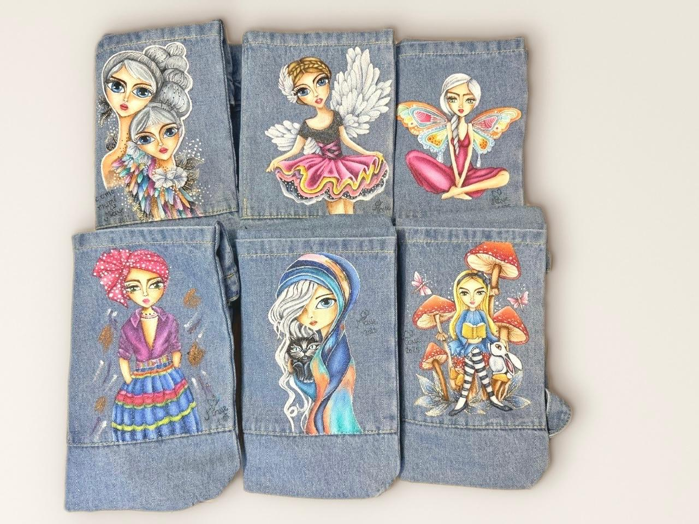

03 / Quiénes somos
Un par de manos.
Muchas ganas de crear.
Soy Maye, la persona detrás de Maye Taller Manual. Empecé pintando mi propia chaqueta y descubrí que una prenda también puede ser una forma de decir quién eres.
Hoy dirijo este pequeño taller de pintura sobre ropa. Escucho tu idea, dibujo a mano y trabajo cada detalle con pinturas textiles pensadas para acompañarte. Me gusta recuperar lo que ya existe y darle una nueva mirada.
“No buscamos prendas perfectas. Buscamos prendas que se sientan tuyas.”
Clara · Fundadora y artista textil